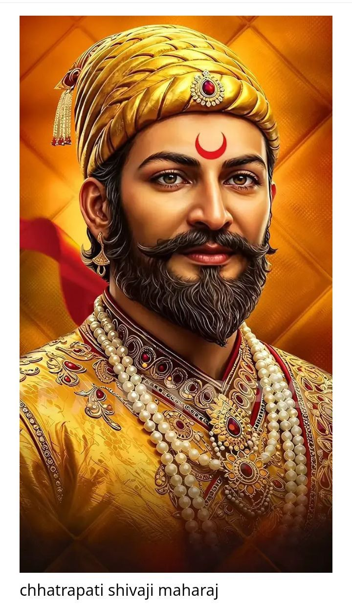
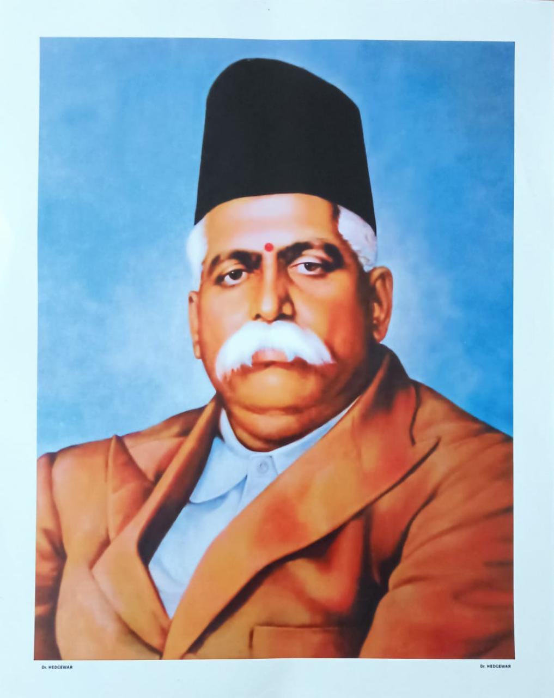
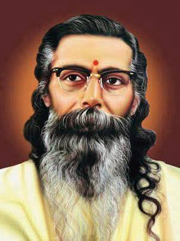
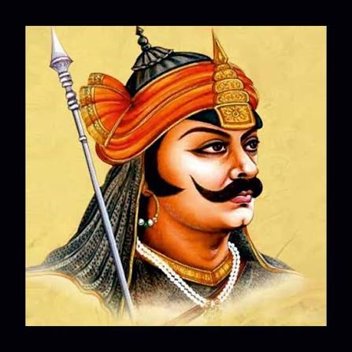

🙏 राष्ट्रीय स्वयंसेवक संघ प्रार्थना एवं संपूर्ण भावार्थ
त्वया हिन्दुभूमे सुखं वर्धितोऽहम् ।
महामङ्गले पुण्यभूमे त्वदर्थे
पतत्वेष कायो नमस्ते नमस्ते ॥१॥
प्रभो शक्तिमन् हिन्दुराष्ट्राङ्गभूता
इमे सादरं त्वां नमामो वयम् ।
त्वदीयाय कार्याय बद्धा कटीयम्
शुभामाशिषं नो देहि तत्पूर्तये ॥२॥
अजयां च शक्तिं प्रदेहीश तुभ्यं
परं शीलमेतद् विधातुं सुसज्जम् ।
श्रुतं चैव यत्कण्टकाकीर्णमार्गं
स्वीकृतं नः सुगमं कारयेत् ॥३॥
समुत्कर्षनिःश्रेयसस्यैकमुग्रं
परं साधनं नाम वीरव्रतम् ।
तदन्तः स्फुरत्वक्षया ध्येयनिष्ठा
हृदन्तः प्रजागर्तु तीव्राऽनिशम् ॥४॥
विजेत्री च नः संहता कार्यशक्तिर्
विधायास्य धर्मस्य संरक्षणम् ।
परं वैभवं नेतुमेतत् स्वराष्ट्रं
समर्था भवत्वाशिषा ते भृशम् ॥५॥
॥ भारत माता की जय ॥
1. हे वत्सल (प्यारी) मातृभूमि! मैं आपको सदा नमस्कार करता हूँ। हे हिंदू भूमि! आपके ही आँचल में मैं सुखपूर्वक बड़ा हुआ हूँ। हे महामंगलमयी अत्यंत पुण्यभूमि! आपके ही पवित्र राष्ट्रीय कार्य के लिए मेरा यह शरीर समर्पित हो जाए, आपको बारम्बार नमस्कार है।
2. हे सर्वशक्तिमान ईश्वर! हम इस परम पवित्र हिंदू राष्ट्र के अंग स्वरूप सभी स्वयंसेवक आपको आदरपूर्वक प्रणाम करते हैं। हम सब आपके ही ईश्वरीय राष्ट्रीय कार्य के लिए कमर कसकर पूर्णतः तैयार हुए हैं, हमें इस कार्य को सफलतापूर्वक पूरा करने के लिए अपना शुभ आशीर्वाद प्रदान करें।
3. हे प्रभु! हमें ऐसी अजेय और उत्कृष्ट शक्ति प्रदान करें जिसे संपूर्ण विश्व की कोई भी आसुरी शक्ति पराजित न कर सके, और ऐसा उज्ज्वल व पवित्र चरित्र (शील) दें जिसके सम्मुख संपूर्ण संसार स्वतः ही विनम्र हो जाए। हमें वह ज्ञान और बुद्धि दें जो हमारे द्वारा स्वयं चुने गए इस काँटों भरे मार्ग को सुगम और प्रशस्त बना सके।
4. हमारे लौकिक अभ्युदय (उन्नति) और परम कल्याण (मोक्ष) को प्राप्त करने का एकमात्र श्रेष्ठ साधन 'वीरव्रत' (साधना) हमारे अंतःकरण में सदा जागृत रहे। हमारे हृदयों में अपने पवित्र लक्ष्य के प्रति अटूट एवं अक्षय ध्येयनिष्ठा हमेशा तीव्र रूप से प्रज्ज्वलित रहे।
5. हमारी यह अत्यंत संगठित कार्यशक्ति निरंतर विजय को प्राप्त करे और अपने उत्कृष्ट सनातन धर्म व संस्कृति का संरक्षण करते हुए, इस राष्ट्र को वैभव के उच्चतम शिखर पर ले जाने में पूरी तरह समर्थ हो। हे ईश्वर! आपके परम आशीर्वाद से हमारी यह सामूहिक शक्ति अति शीघ्र सफल हो।
🚩 महत्वपूर्ण संघ मंत्र एवं भावार्थ
१. संगठन मंत्र (ऋग्वेद)
देवा भागं यथा पूर्वे सञ्जानाना उपासते ॥१॥
समानो मन्त्रः समितिः समानी समानं मनः सह चित्तमेषाम् ।
समानं मन्त्रमभि मन्त्रये वः समानेन वो हविषा जुहोमि ॥२॥
समानी व आकूतिः समाना हृदयानि वः ।
मन्दमस्तु वो मनो यथा वः सुसहासति ॥३॥
२. एकात्मता मंत्र (मुख्य अंश)
वेदान्तिनोऽनिर्वचनीयमेकम् यं ब्रह्मशब्देन विनिर्दिशन्ति ॥१॥
शैवायमीशं शिव इत्यवोचन् यं वैष्णवा विष्णुरिति स्तुवन्ति ।
बुद्धस्तथार्हन्निति बौद्धजैनाः सत्श्रीयकालेति च सिख्खसन्तः ॥२॥
शास्तेति केचित् कतिचित् कुमारः स्वामीति मातेति यमभियन्ति ।
स एक एव प्रभुद्वितीयः स्वयं मङ्गलदश धातु ॥३॥
३. कल्याण मंत्र (सर्वे भवन्तु सुखिनः)
सर्वे भद्राणि पश्यन्तु मा कश्चिद्दुःखभाग्भवेत् ॥
ॐ शान्तिः शान्तिः शान्तिः ॥
💪 शारीरिक विकास
दैनिक शाखा के माध्यम से स्वयंसेवकों के शारीरिक विकास हेतु विशेष गतिविधियाँ की जाती हैं:
-
🏃 मैदानी खेल: कबड्डी, खो-खो, एवं संघ के पारम्परिक खेल जो सामूहिक भाईचारा बढ़ाते हैं।
और पढ़ें ➔ -
🧘 योग व सूर्य नमस्कार: मन की एकाग्रता और शारीरिक लचीलेपन के लिए नियमित योग अभ्यास।
और पढ़ें ➔ -
🛡️ दण्ड व नियुद्ध: आत्मरक्षा की प्राचीन विधाओं का व्यावहारिक प्रशिक्षण।
और पढ़ें ➔
🧠 बौद्धिक विकास
स्वयंसेवकों के मानसिक एवं वैचारिक विकास हेतु शाखा में नियमित चर्चाएं की जाती हैं:
-
📖 अमृतवचन व सुभाषित: महापुरुषों के प्रेरक वाक्य एवं नैतिक मूल्य।
और पढ़ें ➔ -
🗣️ बौद्धिक चर्चा: सामाजिक समरसता, राष्ट्रहित और समसामयिक विषयों पर संवाद।
और पढ़ें ➔ -
🎭 कथा व प्रसंग: भारत के गौरवशाली इतिहास और क्रांतिकारियों की जीवन गाथाएं।
और पढ़ें ➔
✨ हमारे प्रेरणा स्रोत (जीवन परिचय)
राष्ट्रहित, धर्मरक्षा एवं सांस्कृतिक पुनरुत्थान के परम पुनीत पथ का मार्ग प्रशस्त करने वाले महापुरुष:

छत्रपति शिवाजी महाराज
🚩 हिंदवी स्वराज्य संस्थापकमहाराज ने अपनी अदम्य वीरता, कुशल छापामार सैन्य नीति और सुदृढ़ संगठन शक्ति से मुगलों के आततायी साम्राज्य को ध्वस्त किया। उन्होंने भारत में स्वाभिमान, कुशल नेतृत्व, सुशासन और सर्वसमावेशी लोक-कल्याणकारी राज्य की स्थापना कर हिंदवी स्वराज्य की नींव रखी।

डॉ. हेडगेवार जी
🚩 राष्ट्रीय स्वयंसेवक संघ संस्थापकपरम पूजनीय डॉक्टर जी ने वर्ष 1925 में विजयादशमी के पावन अवसर पर राष्ट्रीय स्वयंसेवक संघ की स्थापना की। उन्होंने राष्ट्रीय स्वतंत्रता और हिंदू समाज के संगठन के लिए अपना चिकित्सक करियर छोड़ दिया तथा निस्वार्थ समाज सेवा एवं राष्ट्रीय जागरण का अनुपम पथ प्रशस्त किया।

श्री गुरुजी (एम. एस. गोलवलकर)
🚩 द्वितीय सरसंघचालकसंघ के द्वितीय सरसंघचालक श्री गुरुजी ने अपने आध्यात्मिक तेज, प्रखर बौद्धिक व्याख्यानों और अनवरत प्रवास से संघ कार्य का संपूर्ण राष्ट्र में विस्तार किया। उन्होंने भारत की सांस्कृतिक चेतना को जागृत करते हुए राष्ट्रभक्ति से ओत-प्रोत लाखों निस्वार्थ स्वयंसेवकों का निर्माण किया।

वीर शिरोमणि महाराणा प्रताप
🚩 अदम्य साहस व स्वाभिमान के प्रतीकमेवाड़ के गौरव वीर प्रताप ने अकबर की विशाल साम्राज्यवादी शक्ति के सम्मुख स्वाधीनता का बिगुल फूंका। जंगलों में रहकर घास की रोटी खाई, परंतु देश के स्वाभिमान को झुकने नहीं दिया। उनका अभूतपूर्व स्वाभिमान और वीरता सदियों तक भारत माता के सपूतों को प्रेरित करती रहेगी।
🚩 षड् उत्सव (छह प्रमुख राष्ट्रीय उत्सव)
राष्ट्रीय स्वयंसेवक संघ की पद्धति में मनाए जाने वाले 6 मुख्य सांस्कृतिक और सामाजिक पर्व जो समाज में नई ऊर्जा और समरसता का संचार करते हैं:
वर्ष प्रतिपदा
📅 चैत्र शुक्ल प्रतिपदायह दिन नव-सृष्टि निर्माण और हिंदू नववर्ष का प्रथम पावन दिन है। इसी अत्यंत मंगलमयी और ऐतिहासिक तिथि पर संघ के परम पूजनीय संस्थापक डॉ. हेडगेवार जी का जन्म हुआ था। यह दिन संकल्प का संदेश देता है।
हिंदू साम्राज्य दिनोत्सव
📅 ज्येष्ठ शुक्ल त्रयोदशीयह पावन दिन हिंदू ह्रदय सम्राट छत्रपति शिवाजी महाराज के राज्याभिषेक का गौरवशाली स्वर्ण-दिवस है। यह पर्व संपूर्ण हिंदू समाज के पराक्रम, राष्ट्रीय स्वाभिमान, सुशासन और ऐतिहासिक विजय का प्रतीक है।
गुरु पूर्णिमा
📅 आषाढ़ पूर्णिमासंघ में किसी व्यक्ति को नहीं, बल्कि ज्ञान, त्याग और उत्कृष्ट त्यागशीलता के प्रतीक सनातन 'भगवा ध्वज' को ही गुरु स्वीकार कर उसका विधिवत पूजन किया जाता है। इस दिन स्वयंसेवक राष्ट्रकार्य हेतु गुरु दक्षिणा अर्पण करते हैं।
रक्षाबंधन
📅 श्रावण पूर्णिमायह पर्व संपूर्ण समाज को सामाजिक समरसता और अखंड राष्ट्रीय भाईचारे के सूत्र में पिरोने का पवित्र दिवस है। इस दिन स्वयंसेवक एक-दूसरे को स्नेहसूत्र बांधकर धर्म, समाज व परस्पर सुरक्षा का संकल्प लेते हैं।
विजयादशमी
📅 आश्विन शुक्ल दशमीबुराई पर अच्छाई और सत्य की विजय का पर्व। इसी पावन तिथि पर वर्ष 1925 में नागपुर में राष्ट्रीय स्वयंसेवक संघ (RSS) की स्थापना की गई थी। इस दिन शस्त्र-पूजन तथा स्वयंसेवकों का आकर्षक पथ-संचलन होता है।
मकर संक्रांति
📅 जनवरी (पौष मास)सूर्यदेव के उत्तरायण काल का आगमन और परस्पर सौहार्द्र का पर्व। यह उत्सव संपूर्ण हिंदू समाज में मिठास, समता और बंधुभाव फैलाने का दिव्य संदेश देता है। इस दिन 'तिल-गुड़' बांटकर सभी गिले-शिकवे मिटाए जाते हैं।
🥁 घोष विभाग (Band Division)
घोष शाखा का अत्यंत महत्वपूर्ण और प्रभावी अंग है। यह अनुशासन, सामूहिक तालमेल, वीरता और उत्साह का जीवंत प्रकटीकरण है:
घोष परिचय
शाखा में घोष दल का विशेष स्थान है। यह घोष रचनाओं के माध्यम से स्वयंसेवकों में वीर रस का संचार करता है और सामूहिक अनुशासन सिखाता है।
घोष वाद्य
घोष के अंतर्गत बिगुल, आनक (ड्रम), मुरली (बांसुरी), प्रणव, शंख और झांझ जैसे उत्कृष्ट वाद्यों का प्रयोग कर सामूहिक संगीत रचनाएं तैयार की जाती हैं।
घोष रचनाएँ व गीत
कदम से कदम मिलाकर आगे बढ़ने के लिए प्रयुक्त होने वाले ऐतिहासिक घोष नाद, स्वर रचनाएं और देशभक्ति से ओत-प्रोत धुनें स्वयंसेवकों में उत्साह फूकती हैं।
🎵 शाखा गीत संग्रह (प्रेरक देशभक्ति गीत)
शाखा की बैठकों और कार्यक्रमों में सामूहिक रूप से गाए जाने वाले देशभक्ति और कर्तव्य भावना से परिपूर्ण गीत:
१. हम करें राष्ट्र आराधना
तन से मन से धन से, हम करें राष्ट्र आराधना। यह जीवन है राष्ट्र की धरोहर, उसी की उन्नति ही एकमात्र ध्येय है।
२. संगठन गढ़ें चलो
संघ की शक्ति को गाँव-गाँव और हर घर तक पहुँचाने का आवाहन करता हुआ प्रखर और ओजस्वी प्रेरणा गीत।
गीतों की विस्तृत सूची
- 🚩 नमस्ते सदा वत्सले मातृभूमे (प्रार्थना)
- 🚩 चंदन है इस देश की माटी
- 🚩 हम सब मिलकर कदम बढ़ाएं
- 🚩 ध्वज प्रणाम के साथ समर्पण
📷 फोटो गैलरी (शाखा गतिविधियाँ)
MS भोमिया जी शाखा भवाद की गतिविधियों, पथ संचलन, खेल, उत्सव और सेवा कार्यों की कुछ झलकियाँ (तस्वीर पर क्लिक करें):


📞 संपर्क करें व शाखा से जुड़ें
भवाद क्षेत्र में संघ के सेवा कार्यों से जुड़ने, दैनिक शाखा में सम्मिलित होने या किसी पूछताछ हेतु संपर्क स्थापित करें:
🚩 मुख्य शाखा केंद्र
📍 स्थान: भवाद मैदान, जोधपुर (राजस्थान)
⏰ शाखा समय: प्रतिदिन सायं 5:30 से 6:30 बजे
📱 मुख्य संपर्क: +91 9351449562
📱 सह संपर्क: +91 8529547353